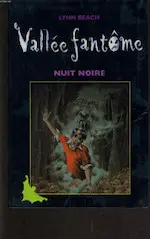

2016
Mars

2015
Novembre

Octobre
-
21 —
 Artemis Fowl d’Eoin Colfer
Artemis Fowl d’Eoin Colfer
- 11 — 💖 Abyss d’Orson Scott Card
Septembre
- 22 — Mes projets en cours
Août
-
29 —
« Hors-séries » de la saga Harry Potter de J.K. Rowling
Le quidditch à travers les âges, Les animaux fantastiques et où les trouver, Les contes de Beedle le barde
- 28 — Les 100 de Kass Morgan
- 14 — Les visages de Dieu de Mallock
-
14 —
Dernières lectures

 Nuit noire (Lynn Beach), Grey (E.L. James), Les menteuses (Sara Shepard)
Nuit noire (Lynn Beach), Grey (E.L. James), Les menteuses (Sara Shepard) -
01 —
 💖 Orgueil et préjugés de Jane Austen
💖 Orgueil et préjugés de Jane Austen
Juillet
-
29 —
 Geisha d’Arthur Golden
Geisha d’Arthur Golden
- 13 — 💖 L’appel du coucou de Robert Galbraith
-
07 —
 💖 De bons présages de Terry Pratchett et Neil gaiman
💖 De bons présages de Terry Pratchett et Neil gaiman
Juin
- 24 — After d’Anna Todd
- 06 — Le théorème des Katherine de John Green
Mai
-
02 —
Mes lectures récentes


 Le fabuleux Maurice et ses rongeurs savants (Terry Pratchett), Journal d’un écrivain en pyjama (Dany Laferrière), L’apprenti épouvanteur (Joseph Delaney)
Le fabuleux Maurice et ses rongeurs savants (Terry Pratchett), Journal d’un écrivain en pyjama (Dany Laferrière), L’apprenti épouvanteur (Joseph Delaney) - 02 — La face cachée de Margo de John Green